Episode 104: We're not in Kansas anymore, Toto! (Part 2) - Last week Tryon, ImaNewbie's creator, found himself somehow mysteriously transported from the Real World and into UO. (If you don't know how he got there check out episode #103 first). As this episode opens we find him trying to find a way out of the game and back to real life.
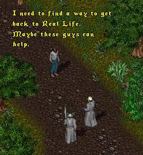
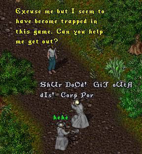
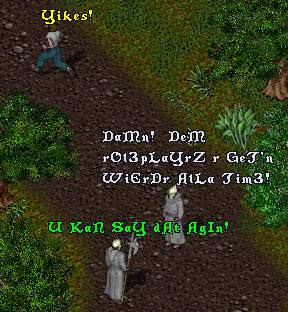
Hmmm, that didn't work, maybe a helpful
wandering healer can offer some advice.
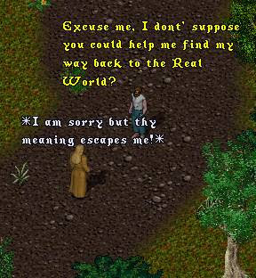
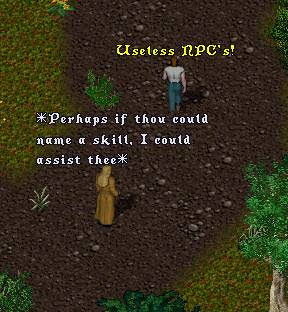
Tryon begins to get discouraged, but then
he thinks of what should have been the
obvious solution...Page a GM!
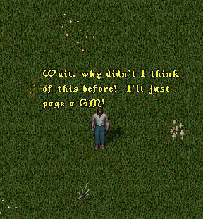
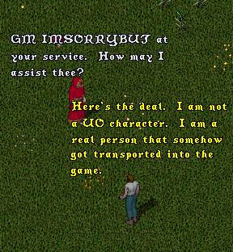
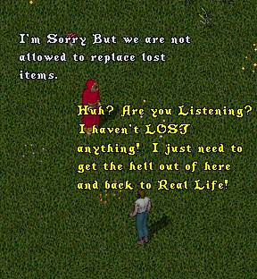
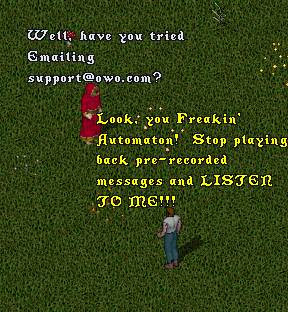
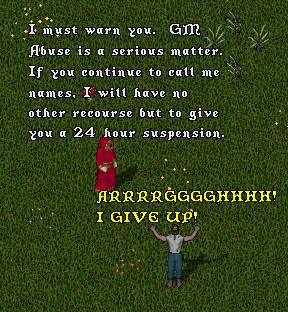
Unable to get anyone to help, ill-prepared
for surviving life in UO, Tryon decides
there is only one thing left to do...
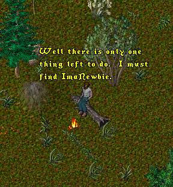